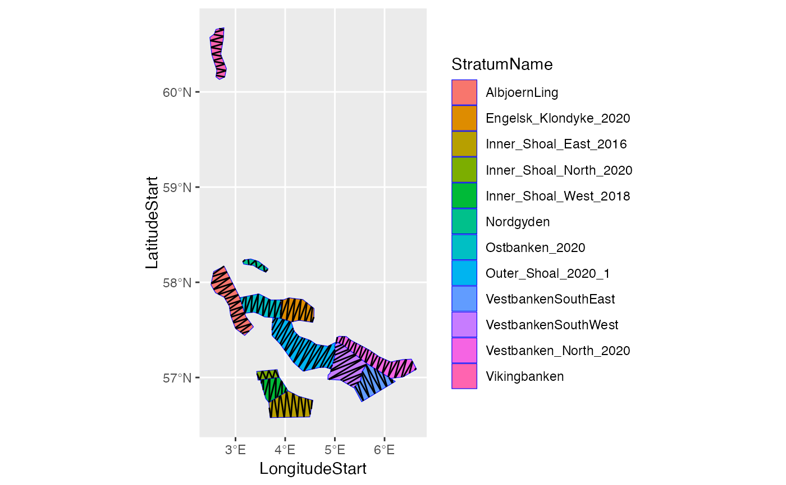

Generate stations along a transect design
StationsAlongTransectDesign(
TransectDesignData,
DefinitionMethod = c("Parameter", "ParameterTable"),
StratumNames = character(),
Distance = numeric(),
Seed = numeric(),
ParameterTable = data.table::data.table(),
AddTransectEndPoints = FALSE
)The TransectDesignData data.
Character: A string naming the method to use, one of "Parameter", for specifying common parameters for all strata given by StratumNames, or "ParameterTable", for specifying individual parameters for each stratum in the table ParameterTable.
Character: The names of the strata for which the parameters are valid. Defaults to all strata.
Numeric: The distance in nautical miles between the stations along the transect design.
Numeric: The seed to use when drawing the random starting point.
A table specifying the parameters Distance and Seed for each stratum.
Logical: If TRUE add the start and end points of the transects given in TransectDesignData.
An object of StoX data type StationsAlongTransectDesignData.
The Seed is used to generate one seed per Stratum which are then used to generate the random starting point of each Stratum. From the starting point the function st_line_sample is used to sample points along the transect design in cartesian coordinates in each Stratum separated by Distance nautical miles (ignoring transit between transects).
library(ggplot2)
stratumFile <- system.file(
"testresources",
"strata_sandeel_2020_firstCoverage.wkt", package = "RstoxBase"
)
stratumPolygon <- DefineStratumPolygon(
DefinitionMethod = "ResourceFile",
FileName = stratumFile
)
# Harbitz zigzag survey design along each stratum:
transectDesignZZ_Along <- TransectDesign(
TransectParameterDefinition = "FunctionParameter",
TransectParameterDefinitionMethod = "Parameter",
TransectType = "ZigZagRectangularEnclosure",
StratumPolygon = stratumPolygon,
SurveyTime = 200,
SurveySpeed = 10,
Seed = 1,
Bearing = "Along"
)
#> StoX: TransectDesign for Stratum AlbjoernLing...
#> StoX: numIter: 1
#> StoX: numIter: 2
#> StoX: TransectDesign for Stratum Engelsk_Klondyke_2020...
#> StoX: TransectDesign for Stratum Inner_Shoal_East_2016...
#> StoX: numIter: 1
#> StoX: numIter: 2
#> StoX: TransectDesign for Stratum Inner_Shoal_North_2020...
#> StoX: TransectDesign for Stratum Inner_Shoal_West_2018...
#> StoX: TransectDesign for Stratum Nordgyden...
#> StoX: TransectDesign for Stratum Ostbanken_2020...
#> StoX: numIter: 1
#> StoX: numIter: 2
#> StoX: TransectDesign for Stratum Outer_Shoal_2020_1...
#> StoX: numIter: 1
#> StoX: numIter: 2
#> StoX: TransectDesign for Stratum VestbankenSouthEast...
#> StoX: TransectDesign for Stratum VestbankenSouthWest...
#> StoX: TransectDesign for Stratum Vestbanken_North_2020...
#> StoX: numIter: 1
#> StoX: numIter: 2
#> StoX: TransectDesign for Stratum Vikingbanken...
#> StoX: numIter: 1
#> StoX: numIter: 2
stations <- StationsAlongTransectDesign(
transectDesignZZ_Along,
Distance = 30,
Seed = 1
)
PlotTransectDesign(
transectDesignZZ_Along,
ShowStratumPolygon = TRUE,
StratumPolygon = stratumPolygon,
StationsAlongTransectDesignData = stations,
StationPointColor = "red"
)
